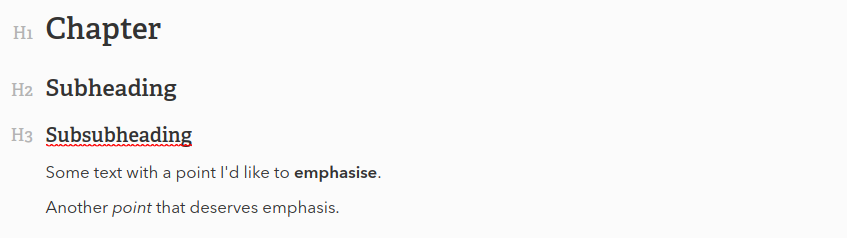
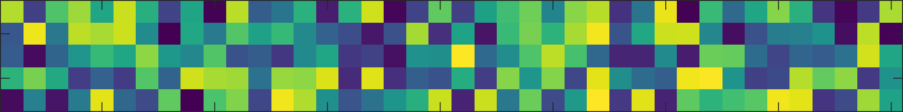

Generating beautiful pdfs with Markdown and Pandoc

Writing a thesis with Markdown and LaTeX
While this start as some textbook procrastination, my foray into the the worlds of Markdown, LaTex and pandoc revolutionised the way I write and note-take.
What started as some textbook procrastination, to avoid the start of my thesis-writing, ended up as
Writing a thesis can be a painful experience and one that conjures parental-like (spoken as a non-parent).
-
Markdown is a joy to write in
-
latex offers you endless option to style and typeset you thesis
-
referencing is straightforward
Requirements
Markdown Editor
Markdown, as a plain text language, can be written with just about any text editor that you would like (gedit, vim, nano, Atom, VS Code). Ultimately, this is the interface you’ll be looking at for the majority of your writing and edits, so pick whichever program you are happiest working in.
Personally, this is the part where I fell in love with Typora. The interface is clean and super aesthetic, offering little distraction between yourself and putting words on the page. It also renders markdown as you type - as opposed a bare-bones text editor.
Recommend looking at my example - if you don’t like it, you don’t need to keep reading!
Latex
Ultimately, $\LaTeX$ is the system used to format your plain-text manuscript into a beautifully typeset pdf file. It’s available for all systems and can be downloaded from here.
Pandoc
Pandoc
- Markdown editor (*Optional, but recommended)
- Latex ($\LaTeX$, specifically XeTeX)
- Pandoc
- Pandoc-crossref
Organising your workflow
Unlike writing with classical “rich-text” editors like Word/LibreOffice/OpenOffice, the formatting and styling of your thesis are defined in standalone files. On first thought this might seem frustrating, or even impractical, but it actually offers remarkable flexibility. For instance, if you decide you want to switch all your headings from a serif to a sans serif font, bump them up to 16pt and centre them, this can be done with a one line change, rather than manually editing every header.
The following folder structure is the particular one I used in writing my thesis, but is by no means a gold standard. The structure and file names are all up to your own discretion.
thesis/
├── figs/
├── pandoc-crossref
├── references.bib
├── style.csl
├── options.yaml
├── header.tex
├── titlepage.tex (optional)
└── thesis.md
I empathise with anyone who looks at this file structure, with five peculiar file types, and is a little off-put. But worry not, I’ll explain.
Files you need not edit…
-
figs folder is where you can store any images or figures to be included in the document.
-
pandoc-crossref is simply the executable file need to correctly format references in our document.
-
style.csl is a file that contains the citation style you’d like to use in your document. Csl files for most journals can be found on Zotero.org.
-
references.bib is the file that contains all your references. You can generate this file by exporting your references from whichever citation manager you use, be that Mendeley, EndNote, Zotero, etc.
Files you should edit…
- options.yaml allows you to list command line options to pass to pandoc, instructing it on how to generate your typeset thesis.
- header.tex allows you to add any $\LaTeX$ packages or commands to modify the formatting of your document .
- titlepage.tex is an optional file allowing you to define a custom title page, if the default is not to your liking.
- thesis.md contains the actual content of your thesis.
Writing in markdown
If you’re already familiar with Markdown, feel free to jump straight to the next section.
Writing in markdown
# Chapter
## Subheading
### Subsubheading
Some text with a point I'd like to **emphasise**.
A *Species name* that just begs for some italics.
which will render like this in your markdown editor…

Realistically, for 99% of your thesis-writing, this is all the markdown know-how you really need. Remember, at this point you need not worry about font, size, colour, or any other styling of your actually thesis. This is just about getting words on the page. Markdown makes this clean and aesthetic.
Citations
I’ll admit, the Mendeley plugin in MS Word has done me solid service through my undergrad, but referencing in Markdown (more specifically, with LaTeX), is almost as straightforward. The first thing you need to do is export your list of references to a .bib file (BibTeX format) from your reference manager. This is simple enough in Mendeley (File > Export) and I’m sure the same can be said for other reference managers.
The second thing you need to do is work out which citation style you want to use. In some cases this may be a strict guideline set by you institution, but in my case I just picked the journal whose style I liked best (Current Biology). Having worked this out, head to zotero.org and download the .csl file for your desired citation style.
All that’s left to do is to start dropping citations in your manuscript. To do this, you need to know the ‘citation key’ for the paper in question, which is set by your reference manager. In my case, Mendeley lists citation keys as LastNameYYYY.
This handle can be used to plonk the citation into your text with this simple syntax,
Previous literature has outlined the utility of using 'pandoc' to convert Markdown files to pdf files [@LastName2019], though many still rely on rich-text editors for writing theses.
In your final pdf, this will render both a hyperlinked (clickable) reference, as well as the bibliography entry, both with the specified citation style.
Figures
I have tried to repress the memories of battles lost against MS Word, trying to arrange images, only for them to vanish, hang off pages or decapitate paragraphs. Blissfully, inserting images or figures into markdown is (almost) entirely pain free. Namely, when generating a pdf with pandoc, figure placement is automatic, giving full pages to large figures, or tactfully inserting smalerl figures above of below text - no manual manoeuvring!
I recommend creating a separate directory for figures, simply to keep your working directory uncluttered. Pandoc and LaTeX can handle all conventional bitmap image formats (png, jpeg), but more importantly they can also handle vector-based images; eps, pdf and svg (enabled by the built-in rsvg-convert package). From here, some Markdown editors (like Typora) will allow you to drag and drop images into whichever line you like. Alternatively, you can type out the following syntax to insert you image:
{#fig:one}
Your figure caption should be entered within the square brackets, while the path to the image (relative or absolute) is placed between the parentheses. Alternatively, you can link remote image files with a URL from your personal cloud storage, image repo, or anywhere else on the internet, and they will be incorporated into your pdf.
The curly brackets are an optional syntax (enabled by the pandoc-crossref extension) allowing you to create a figure handle, with which you can create within-document hyperlinks, allowing you to jump from text to figure. Define the handle with {#fig:my_handle} and you can deploy the link, like so:
Making within-document links to figures is easy, as outlined in [@fig:my_handle].
image
Just make sure that handles for different figures are unique!
It is even possible to do subfigure referencing with pandoc-crossref, though I have not tried it myself. Instead, I settled to reference subfigures as [@fig:my_handle]B, which reads as “fig. 1B” in the final pdf.
Yaml metadata

Converting to pdf
Step up to the microphone, pandoc.
Pandoc is the a wonderful tool that will let you convert plain text documents to just about any format you like. HTML? Walk in the park. Pdf? Yeah, no problem. Presentation slides? Hold my beer…
The gist of our Markdown to pdf conversion is that it takes the basic syntax of Markdown (heading, subheading, bold, italics, etc), translates that into equivalent LaTeX syntax, then uses this to generate the fully fledged pdf.
Basic usage
To start, you’ll need to navigate to your project folder in your terminal. You can then enter the following command (on Mac or Ubuntu):
pandoc -o thesis.pdf thesis.md
At it’s most
Pandoc has a formidable host of options, allowing you to specify the
At it’s most basic, default formatting
Adding command line options
- options.yaml
Adding styling
- header.tex
Making it pretty
- custom titlepage
- custom fonts
- redefining heading/subheadings
- adding supplemental figures
- forcing bibliography location
Other
With Typora and other dynamically rendered Markdown editors this image should appear continuous with your text.
…which renders like this.

Better still, by downloading the pandoc-crossref package
Structure
-
Intro
- for the love of simple formatting (not as true as you think)
- Why do this?
- Dislike for rich-text editors
- Love of markdown (if yet unfound)
- automatic toc & reference formatting
- automatic figure placement
- beautiful, consistent formatting
- Why not do this?
- need for WYSIWYG
- don’t want to learn a little latex
- desire not to debug
- So why not just use Latex?
- Requirements
- Referencing
- Supplementals
- Figure referencing
- Importing figures
- Making your own title page
- On using svgs
- Special characters (degrees, superscript & subscript)
- A word on R Markdown
Troubleshooting
Citations
Should you ever find that your citations are not appearing in your pdf, or pandoc is telling you that citations keys are missing, here are two likely causes:
- You’ve added a new paper to your library since you last exported a .bib file - you’ll need to export this file whenever you update your library.
- You’re using the wrong citation key. Some keys may have a suffix (e.g. Smith2009a) in cases where multiple files exist with the same lastname and date, or where you have duplicate files in your library. You can check either the .bib file or your citation manager to find the correct citation key.
Figures
I did hit a couple of snags with figures:
- Long captions on tall figures do not obey the bottom margin, nor the bottom of the page, so can run into page numbers or even off of the page. I’m sure there is a fix for this, it just might take some googling. This can be avoided if your figure arrangement is flexible.
- Editing figure captions in Typora can be a little frustrating (you’ll find out why). Just switch to ‘Source Code Mode’ and it’s much easier.
- If you want to include supplmental figures, you have to employ a little trick to get them to reference properly (see later in this doc).
- The svg files I tested (generated in MATLAB) sometimes rendered strangely in the final pdf, especially regarding text. I resolved this by installing Inkscape (vector editing software) and downloading the pandoc-svg filter (included in my github repo), which uses Inkscape, rather than rsvg-convert, to convert svg files to pdfs.
The short version